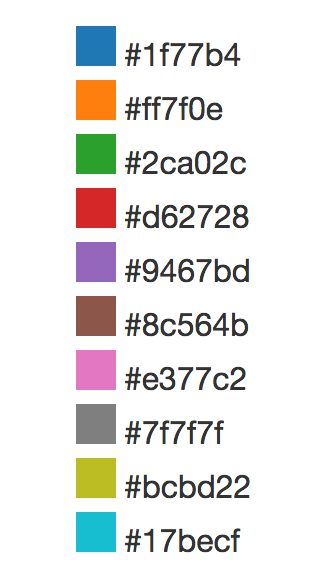

D3.js
Data-Driven Documents
Slides : bit.ly/gdi-d3-slides
What is D3?
What d3 is not?
Not a prototyping tool.
Then Why?
Lot's of examples
SVG
-
SVG is another HTML element, except you can't put another HTML element inside an SVG.
SVG does not support common HTML attributes or styles such as position, left, top, right, bottom or float.
Circle
Rectangle
Interesting fact: if a properly specified value is provided for rx but not for ry (or the opposite), then the browser will consider the missing value equal to the defined one.
Line
Path
- M - move.
- L - line.
- z - close path.
Text
Unless you set the style of the SVG text, it inherits font-styles from CSS.
Group
Any transformations (positioning, scaling, rotating) that are applied to the group element will also be applied to each of the child elements.
SVG styles
- background-color = fill
- border = stroke
How to D3
Procedure to associate data with DOM
- Select a parent container and child nodes
- Bind array of data to child nodes
- Append nodes to parent container
- Bind events, style and animate!
Selection
Select a parent container and child nodes
jQuery
var paragraphs = $("div p");
D3
var paragraphs = d3.select("div").selectAll("p");
D3 difference: child nodes might not actually exist
Selectors in D3 are declared the same way as CSS rules. An important difference is that a D3 selector object only contains the elements that matched the selection rule when the selection was first created.
Data
Bind array of data to child nodes
d3.selectAll("p")
.data([3, 7, 21, 31, 35, 42])
Enter() and Append()
When data is bound to a selection, each element in the data array is paired with the corresponding node in the selection. If there are fewer nodes than data, the extra data elements form the enter selection, which you can instantiate by appending to the enter selection
d3.select("body").selectAll("p")
.data([3, 7, 21, 31, 35, 42])
.enter().append("p");
Exit() and Remove()
Using D3’s exit and remove, you can get rid of outgoing nodes that are no longer needed.
var bars = d3.select('svg').selectAll('rect').data(someData);
//if we have more data, add new rectangles for those data items
bars.enter().append('rect')
//if we have less data points, remove the rectangles that no longer have a data pairing.
bars.exit().remove();
if you forget about the enter and exit selections, you will automatically select only the elements for which there exists corresponding data.
// Update…
var p = d3.select("body").selectAll("p")
.data([3, 7, 21, 31, 35, 42]);
// Enter…
p.enter().append("p")
// Exit…
p.exit().remove();
By handling these three cases separately, you specify precisely which operations run on which nodes.
Let's give it a try
Exercise: http://bit.ly/enter-exit-exercise
If you get stuck...Sotlution
You can operate over the nodes in a declarative way using selector methods.
- setting attributes or styles
- registering event listeners
- adding, removing or sorting nodes
- and changing HTML or text content
Style
You can use data values or index in a callback to define any property.
d3.select("div").selectAll("p").style("color", function(data, i) {
return i % 2 ? "red" : "blue";
});
Transition
d3.selectAll("circle")
.attr("r", "0");
.transition()
.duration(750)
.delay(function(d, i) { return i * 10; })
.attr("r", function(d) { return Math.sqrt(d); });
Try it for yourself
Exercise 0: Look at the example and create a transition to change the size of the circles:http://bit.ly/d3-transitions
Exercise 1: http://bit.ly/d3exercise1
In case you get stuck... Solution for Exercise 1
More Advanced D3
Scales and Domains
Axis
Loading external data
Scales
Scales transform a number in a certain interval (called the domain) into a number in another interval (called the range).

- d3.scale.linear - construct a linear quantitative scale.
- domain - get or set the scale's input domain.
- range - get or set the scale's output range.
Quantitative Scale
- Linear scales
- Logarithmic scales
- Power scales (including square root scales)
var x = d3.scale.linear()
.domain([0, d3.max(data)])
.range([0, 420]);
d3.select(".chart")
.selectAll("div")
.data([3, 7, 21, 31, 35, 42])
.enter().append("div")
.style("width", function(d) { return x(d) + "px"; })
Ordinal Scale
Ordinal Scale have a discrete domain, such as a set of names or categories.
var x = d3.scale.ordinal()
.domain(["A", "B", "C", "D", "E", "F"])
.rangeRoundBands([0, width], .1);
Color Categories
d3.scale.category10() - Constructs a new ordinal scale with a range of ten categorical colors:
Let's refactor our bar chart.
Create a bar charts with scaleSolution: Bar Charts with Scale
Axis
d3.svg.axis creates a new axis generator.
- axis.scale
- axis.orient
- axis.ticks
- axis.tickFormat
var xAxis = d3.svg.axis()
.scale(x)
.orient('bottom')
.tickValues(data);
d3.time
d3.time.format - creates a new local time formatter for a given specifier.
d3.time.format("%Y-%m-%d");
d3.time.scale - constructs a linear time scale.
var xScale = d3.time.scale()
.domain([2009-07-13T00:02, 2009-07-13T23:48])
.rangeRound([0, width]);
//rangeRound does the same thing as range but rounds the values to integers or begining of dates.
d3.time.intervals - a time interval in local time.
- d3.time.hour
- d3.time.week
- d3.time.monday
- d3.time.year
Working with Arrays
Most commonly used functions
- d3.min/d3.max
- d3.range
- d3.keys - lists the keys of an associative array.
- d3.merge - merges multiple arrays into one array.
- d3.nest - groups array elements hierarchically.
Loading External Resources
- d3.json
- d3.csv
- d3.tsv
Examples
Good News!
Other D3 resources
- Scott Murray / @alignedleft
- Angular and D3 book by Ari Lerner and Victor Powell
- D3 meet-up group hosted by Ian Johnson
- Jerome Cukier / @jcukier